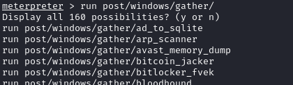
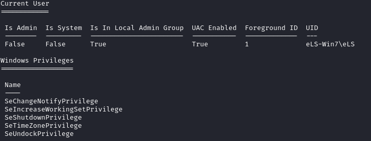
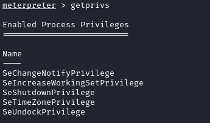

Windows
• Windows Gather Privileges Enumeration (post/windows/gather/win_privs),
run post/windows/gather/win_privs
It print if:
◇ if UAC is enabled
◇ if the current account is ADMIN enabled
◇ UID
◇ foreground SESSION ID
◇ SYSTEM status
◇ current process PRIVILEGES.
• enum_applications → installed applications
meterpreter> run post/windows/gather/enum_applications
• getprivs (windows: whoami /all) → list all of the Windows System Process Level Privileges that are enabled
▪ If we have a small amount of privileges, probably we will not be able to run successfully getsystem; we can try to bypass UAC
• winenum → gather more information; results will be saved in a hidden folder in "/root/.msf4/logs/scripts/winenum/"
run winenum
cd /root/.msf4/logs/scripts/winenum/ELS-WIN7_20211114.3331